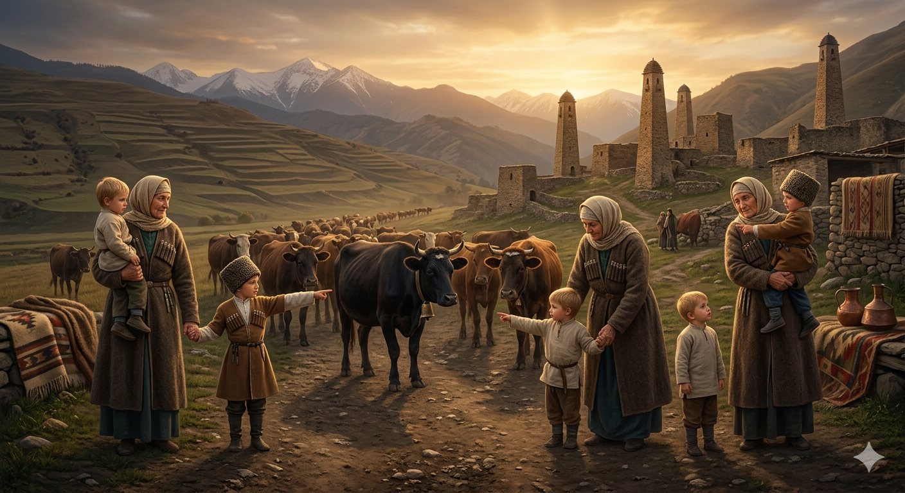

И.А. Дахкильгов. Хьехаме дувцарш - поучительные рассказы-притчи.
И.А. Дахкильгов. Хьехаме дувцарш - поучительные рассказы-притчи. Из ингушского фольклора.

Вай, шун
Сайрийна божагара боагӀача Ӏатта духьала яхай цхьа йоккха саг. Ши кӀаьнк хиннав цунца, цаӀ воӀа ваь волаш, вож йоӀо ваь волаш. ВоӀа ваьр кулг лаьца вугаш хиннав, йоӀо ваьр ший кара воаллавеш хиннав. Бож юрта хьачулестача, воӀа ваьчо аьннад: - Наний, вай етт цӀабоагӀа. Божагахьа дӀахьежав кара воалла йоӀо ваь кӀаьнк. Цо а аьннад: - Нани, етт цӀабоагӀа шун. Циггач йиӀийна ваьр Ӏо а ваьккха, воӀа ваьр хьакара ийцав йоккхача саго.
РУССКИЙ
Наша, ваша
Некая старуха вышла вечером за село, чтобы встретить свою корову, которая возвращалась с сельским стадом. С нею были двое ее внучат. Один был от сына, а другой от дочери. Внука от сына она держала за руку, а внука от дочери держала на руках. Когда появилось стадо, внук от сына сказал: "Бабушка, во-он идет наша корова". Посмотрел в сторону стада внук от дочери и сказал: "Бабушка, смотри, идет ваша корова". Тут старушка опустила на землю внука от дочери и взяла на руки внука от сына.
ENGLISH
Ours, yours
One evening, an old woman went out beyond the village to meet her cow, which was returning with the village herd. She was accompanied by her two grandsons. One was her son's son, and the other was her daughter's son. She held her son's grandson by the hand, whilst carrying her daughter's grandson in her arms. When the herd appeared, the grandson from her son said, 'Grandma, there's our cow coming.' The grandson from her daughter looked towards the herd and said, 'Grandma, look, there's your cow coming.' At that, the old woman set the grandson from her daughter down on the ground and picked up the grandson from her son.
НОХЧИЙН
ПОГОВОРКИ
Ахчано гаргало хотт, ахчано из йоха а ю. Деньги сплачивают родство, и они же рвут узы родства. Money can bind kinship together, and money can tear it apart too. Ахчано гергарло хотту, ахчано и а йоху.Бера цӀийх ийс дакъа – наьна цӀий да, даь цӀийх цхьа дакъа мара дац. Девять частей крови ребенка – от матери, лишь одна часть – от отца. Nine parts of a child's blood come from the mother; only one part comes from the father. Бераца ц1ий исс дакъа ненара ду, цхьа дакъа бен дера дац.Вежарашта юкъе а хул хьамсарагӀа воша. И среди братьев бывает более любимый. Even among brothers, one is always the more beloved. Вежаршна юккъехь а хуьлу хьамсараг1а ваша.Даь-йиша – тух, наьна-йиша – модз. Отцова сестра что соль, сестра матери – мед. A father's sister is like salt; a mother's sister is like honey. Даь йиша – тух ю, ненан йиша – мозах ю.Жерочун воӀ лерах вовзаргва. Сына вдовы узнают по болтливости. A widow's son is known by his talkativeness. Жерочун во1 дукха дуьйцучух бевзаш ву.ЙоӀ маьре йохийташ бийна наьна букъ воӀа саг йоалаеш хьалнийсабеннаб. Спина, которая согнулась у матери после выдачи дочери замуж, выпрямилась, когда сын женился. The mother's back, bent from marrying off her daughter, straightened again when her son took a wife. Йо1 маьре йохийтина бекадели ненан букъ, во1 зуда йоьхьуш нийсдели.Коч кетарал дегӀа кхоаччарагӀа я. Рубашка ближе к телу, чем шуба. A shirt is closer to the body than a coat. Коч кетарал дег1а к1аргаг1а ю.Кхийна дезал фусам-наьнага боале, фусам-да цӀагӀара ваха мара везац. Если мать будет в союзе с выросшими детьми, отцу остается только дом покинуть. If a mother sides with her grown children, the father has no choice but to leave the house. Кхиъна доьзал ненан аг1ор боалахь, дан ц1ара ара ваха бен ца хуьлу.Наьха лакхача гӀалийла ший бӀу тол. Своя дружина надежнее чужой башни. Your own kin are more reliable than someone else's mighty fortress. Наха лакха г1алал шен йиша-ваша тоьар ду.Сай цӀа – цӀай-цӀа. Мой дом – святилище. My home is a sanctuary. Сан ц1а ц1ий-ц1а ду.ТӀабенача дахкилго кӀалхарабар эккхабаьб. Пришлая мышка местную изгнала. The newcomer mouse drove off the local one. Т1аваьнна дахкас к1аьлхьара дахка д1аэккхийтина.ХӀарача деша ший моттиг я. У каждого слова есть свое место. Every word has its proper place. Массо дашан шен меттиг ю.Цхьанне диках шиъ воахавеннавац. Добра (имущества) одного не хватает на двоих. One man's fortune is not enough for two. Цхьаннан диках шинна ца тоьу.Ший цӀагӀа – урядник, наьха цӀагӀа – базарник. В своем дому – урядник, в чужом доме – “базарник”. In one's own home, a strict overseer; in someone else's, a rowdy stranger. Шен ц1ахь – урядник, наха ц1ахь – базарник.